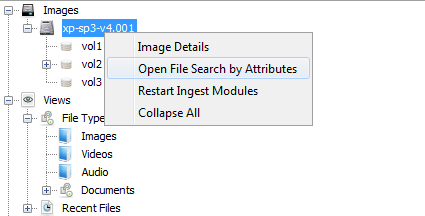
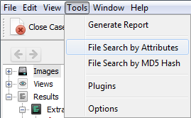

How to Open File Search
To open the File Search, you can do one of the following thing:
- Right click an image and choose "Open File Search by Attributes".

- Select the "Tools" > "File Search by Attributes".

- Note:
The File Search Window is opened and closed automatically.
If there's a case opened and there is at least one image inside that case, File Search Window can't be closed.